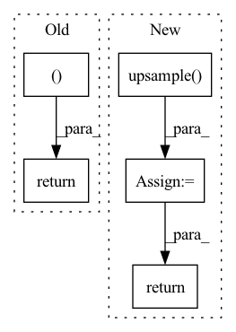

Pattern ID :778

Before Change
f3 = self.conv4(f3)
out = self.conv5(f3)
return f3, out
After Change
def forward(self, f1, f2, f3):
f3 = self.upsample(f3, f1.shape[-2:])
f2 = self.upsample(f2, f1.shape[-2:])
f1 = torch.cat([f1, f2, f3], dim=1)
f1 = self.conv1(f1)
Hf1 = self.Hattn(f1)
Wf1 = self.Wattn(f1)
f1 = self.conv2(Hf1 + Wf1)
f1 = self.conv3(f1)
f1 = self.conv4(f1)
out = self.conv5(f1)
return f1, out
In pattern: SUPERPATTERN
Frequency: 3
Non-data size: 5
Instances
Fragment ID: 2520334
Project Name: plemeri/inspyrenet
Commit Name: f38e9f6e03c7521b7a8ff0f9f06bfce8c132dca1
Time: 2022-02-26
Author: taehoon1018@postech.ac.kr
File Name: lib/modules/decoder_module.py
M Class Name: PAA_d2
N Class Name: PAA_d2
M Method Name: forward(4)
N Method Name: forward(3)
M Parent Class: nn.Module
N Parent Class: nn.Module
M File Name: lib/modules/decoder_module.py
N File Name: lib/modules/decoder_module.py
M Start Line: 124
M End Line: 136
N Start Line: 131
N End Line: 146
'>
Before Change
x = self.conv4(x)
out = self.conv5(x)
return x, out
class PAA_d2(nn.Module):
def __init__(self, channel):
super(PAA_d2, self).__init__()
After Change
self.upsample = lambda img, size: F.interpolate(img, size=size, mode="bilinear", align_corners=True)
def forward(self, f1, f2, f3):
f1 = self.upsample(f1, f3.shape[-2:])
f2 = self.upsample(f2, f3.shape[-2:])
f3 = torch.cat([f1, f2, f3], dim=1)
f3 = self.conv1(f3)
Hf3 = self.Hattn(f3)
Wf3 = self.Wattn(f3)
f3 = self.conv2(Hf3 + Wf3)
f3 = self.conv3(f3)
f3 = self.conv4(f3)
out = self.conv5(f3)
return f3, out
class PAA_d2(nn.Module):
def __init__(self, channel):
'>
Fragment ID: 2520332
Project Name: plemeri/inspyrenet
Commit Name: c355ab0cc90c9a3d27726822c1223d2f98cd0f0c
Time: 2021-11-01
Author: taehoon1018@postech.ac.kr
File Name: lib/modules/decoder_module.py
M Class Name: PAA_d
N Class Name: PAA_d
M Method Name: forward(4)
N Method Name: forward(3)
M Parent Class: nn.Module
N Parent Class: nn.Module
M File Name: lib/modules/decoder_module.py
N File Name: lib/modules/decoder_module.py
M Start Line: 86
M End Line: 101
N Start Line: 85
N End Line: 99
'>
Before Change
x = self.conv_out3(x)
out = self.conv_out4(x)
return x, out
After Change
assert not xor(self.lmap_in is True, lmap is not None)
for i, f in enumerate(feat_maps):
if f.shape[-2:] != shape:
feat_maps[i] = self.upsample(f, shape)
x = torch.cat(feat_maps, dim=1)
b, c, h, w = x.shape
// compute class probability
smap = F.interpolate(smap, size=x.shape[-2:], mode="bilinear", align_corners=False)
smap = torch.sigmoid(smap)
p = smap - self.threshold
fg = torch.clip(p, 0, 1) // foreground
bg = torch.clip(-p, 0, 1) // background
cg = self.threshold - torch.abs(p) // confusion area
if self.lmap_in is True:
lmap = F.interpolate(lmap, size=x.shape[-2:], mode="bilinear", align_corners=False)
lmap = torch.sigmoid(lmap)
lp = lmap - self.lthreshold
fp = torch.clip(lp, 0, 1) // foreground
bp = torch.clip(-lp, 0, 1) // background
prob = [fg, bg, cg, fp, bp]
else:
prob = [fg, bg, cg]
prob = torch.cat(prob, dim=1)
// reshape feature & prob
f = x.view(b, h * w, -1)
prob = prob.view(b, self.ctx, h * w)
// compute context vector
context = torch.bmm(prob, f).permute(0, 2, 1).unsqueeze(3) // b, 3, c
// k q v compute
query = self.conv_query(x).view(b, self.channel, -1).permute(0, 2, 1)
key = self.conv_key(context).view(b, self.channel, -1)
value = self.conv_value(context).view(b, self.channel, -1).permute(0, 2, 1)
// compute similarity map
sim = torch.bmm(query, key) // b, hw, c x b, c, 2
sim = (self.channel ** -.5) * sim
sim = F.softmax(sim, dim=-1)
// compute refined feature
context = torch.bmm(sim, value).permute(0, 2, 1).contiguous().view(b, -1, h, w)
out = self.conv_out(context)
return out
'>
Fragment ID: 2520333
Project Name: plemeri/inspyrenet
Commit Name: 722874b88a2465f214eac13d8cda7a9f446e9040
Time: 2021-11-01
Author: taehoon1018@postech.ac.kr
File Name: lib/modules/attention_module.py
M Class Name: ASCA
N Class Name: ASCA
M Method Name: forward(5)
N Method Name: forward(4)
M Parent Class: nn.Module
N Parent Class: nn.Module
M File Name: lib/modules/attention_module.py
N File Name: lib/modules/attention_module.py
M Start Line: 127
M End Line: 136
N Start Line: 81
N End Line: 132